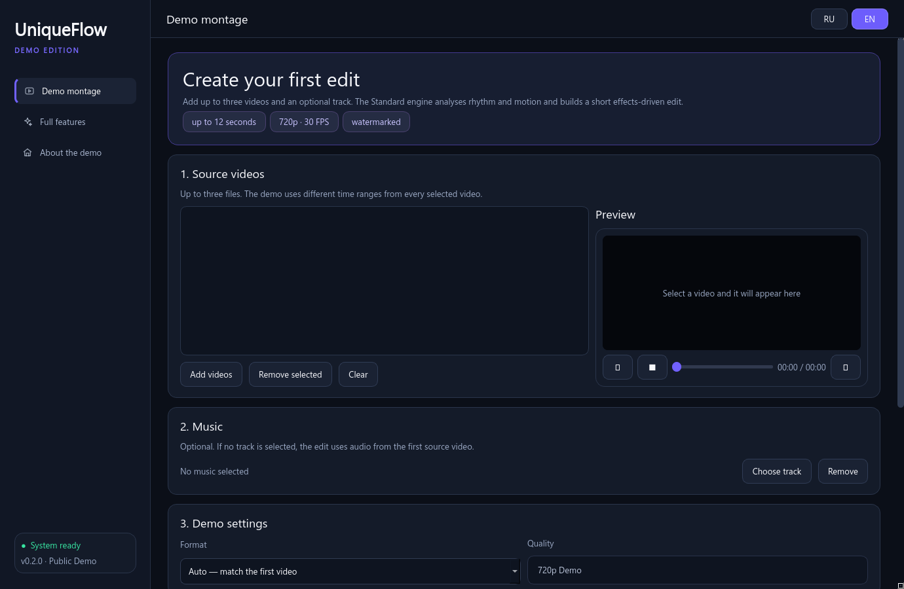
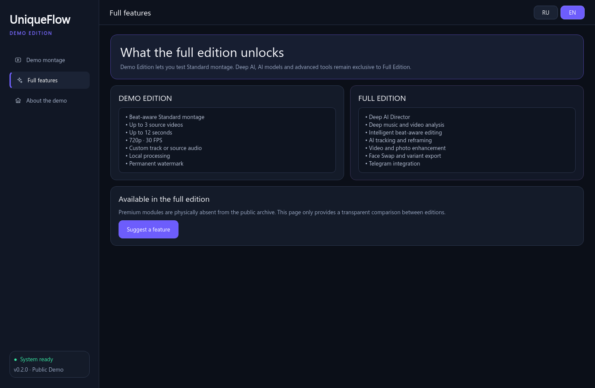

Music-aware direction
Standard montage and Deep AI Director analyse rhythm, motion and scenes to build a more intentional edit.
Free Full Beta for Windows · limited-time access
Test the complete UniqueFlow workflow: add clips, choose music and let Standard or Deep AI Director build the edit locally on your PC.

Product preview
Full Beta opens the real desktop workflow for early testing: the proven Standard engine, Deep AI Director and local enhancement tools are included in one installable build.
Product preview. Actual processing time and results depend on your media and hardware.
The idea behind UniqueFlow
One place for importing, previewing, editing and exporting short-form video.
Standard montage and Deep AI Director analyse rhythm, motion and scenes to build a more intentional edit.
Tracking and framing tools are designed to keep the important subject inside a vertical or horizontal composition.
Video enhancement, Photo AI and advanced export modes are included for Full Beta testing.
Selected media is processed on your Windows computer. This candidate contains no product analytics or telemetry.
Full Beta access is open
No account and no subscription during the beta. Download the Windows installer and test the complete release candidate.
The button creates a short-lived link to the private beta file.
Install per user on Windows 10/11. Administrator rights are not required.
Add video and music, then choose Standard or Deep AI and export your result.
Version · · Windows 10/11. The button creates a temporary private download link.
SHA-256:

Full Beta 0.9.0-rc1
This is a release candidate, not a cut-down showcase. Face Swap remains disabled while redistribution rights for its model stack are reviewed.
Questions
Full Beta is a free release candidate. Access may close after enough people have joined the test.
Yes. Full Beta 0.9.0-rc1 is free for personal evaluation while the beta is open. It is not a paid public release.
No. Video, photo and music processing is local. Network access is used only for functions you request, such as downloads or your own Telegram bot.
The beta is not code-signed yet, so SmartScreen may show an “Unknown publisher” warning. Verify the displayed SHA-256 before installing.
Approximately 902 MiB. The installer includes the application runtime and local processing models.
Use only media you own or have permission to process. The software must not be used to violate privacy, copyright or platform rules.
Write on Telegram at @zloy_tomych or open a GitHub issue.
Limited-time Full Beta
Access can be closed when the current testing group is full.